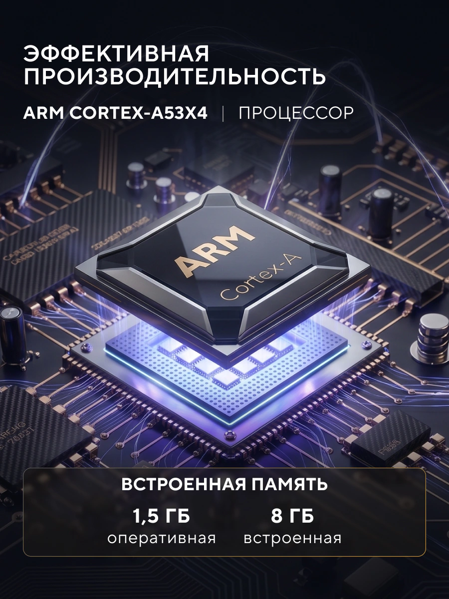
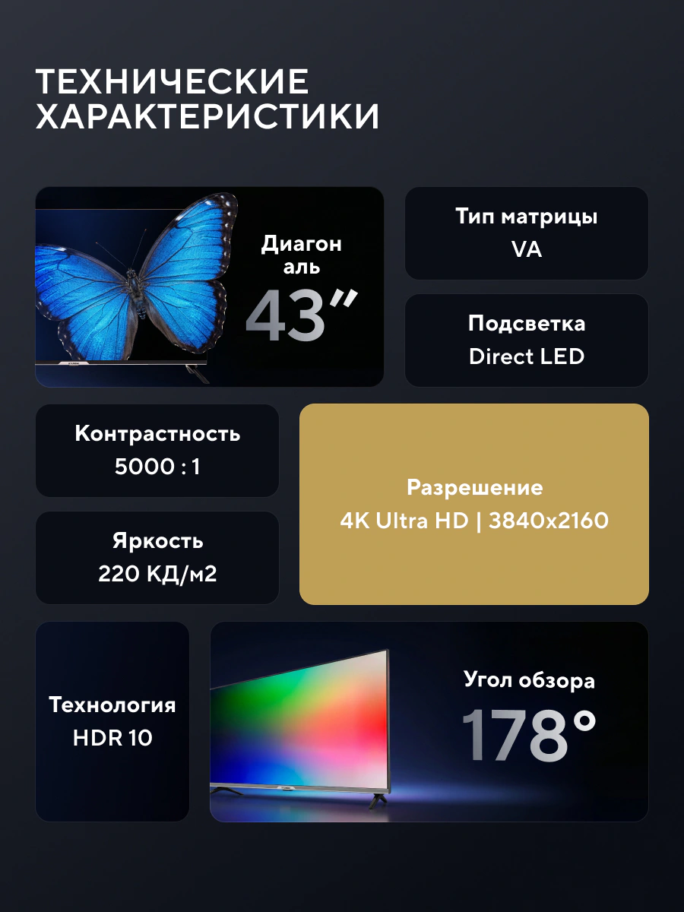
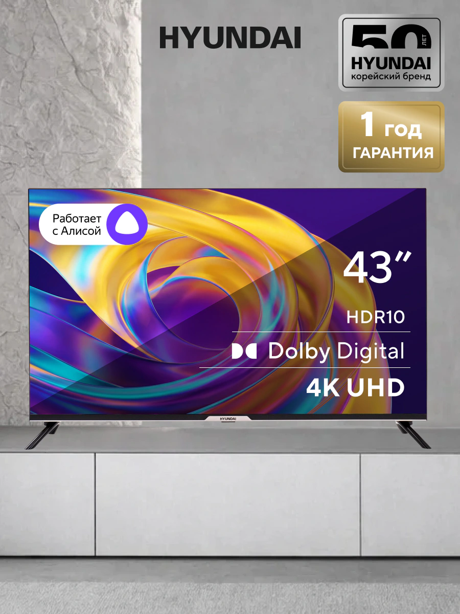
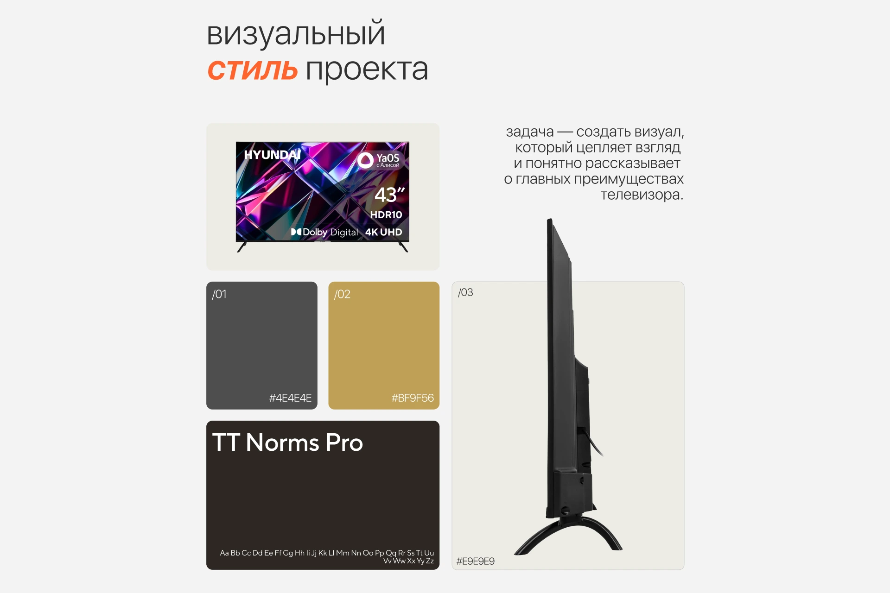
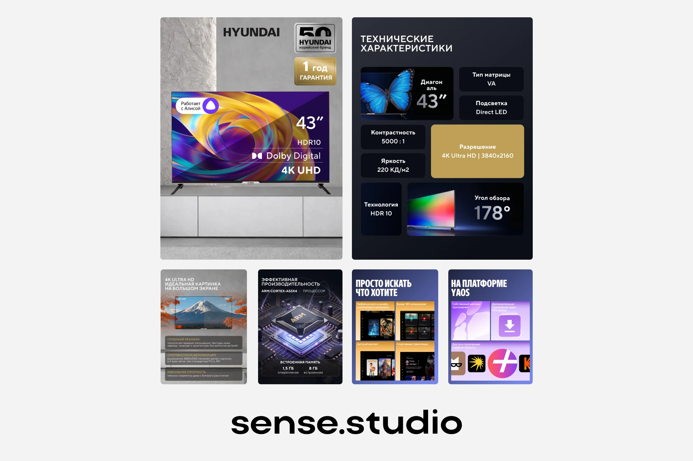

Карточки телевизоров Hyundai
Единый шаблон рич-контента для более чем 20 моделей



Визуальный стиль рич-контента Hyundai

Карточки телевизоров Hyundai

Единый шаблон рич-контента для более чем 20 моделей




